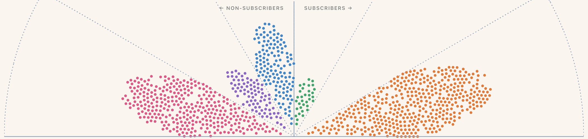

nyu
journalism m.a. sep.10-dec.11science, health, and environmental reporting program (sherp)
interactive version · ritchiesking.com/resume
data visualization engineer · formerly netflix
sacramento, ca
data visualization
full-stack web development
ui/ux design
data analysis, engineering, & etl
reporting, writing, & editing
d3 • tidyjs • geojson
ts • node • vite • react • express
tailwind • figma • shadcn
r • snowflake • spark • druid
agent-driven development
reported and wrote graphic-driven stories about business and economics
a process designer and researcher working on the scale-up crew at a biofuels start-up
science, health, and environmental reporting program (sherp)
2007 b.e., engineering · 2006 b.s., engineering & environmental science
visual storytelling with d3 — addison-wesley, 2014
oct.18–oct.26 · growth & finance
I spent eight years building data products that growth and finance leaders used to run the business, first as a senior, then as a staff data visualization engineer.
4,200+ commits · 55 repos · 670+ PRs · apps used by thousands of colleagues

| domain | select projects | impact |
|---|---|---|
| account sharing 2020–2026 I gave each phase of Netflix’s crackdown on password sharing its own focused tool and did much of the data modeling and engineering. | Animated scrollyteller explaining sharing detection | Viewed by hundreds of colleagues; format requested for other domains |
| Test-market dashboards for two approaches to paid sharing | Leadership compared them side by side to pick the winner we productized. | |
| Launch dashboard | Widely used; UI patterns adopted by other teams | |
| business insights 2018–2026 I built apps that growth and finance leaders used to make decisions about pricing, revenue, payments, and more. | Netflix’s key business dashboard (contributor) | Used by thousands of colleagues, daily in some cases |
| Dashboard showing the revenue impact of each price change | Used to decide when, where, and by how much to raise prices in the future | |
| Membership-lifecycle app | Filled a need not identified by users. Novel visualizations were praised. | |
| the agent era 2025–2026 On Netflix’s generative-AI task force for data, I worked on how viz engineers should build data products with the help of agents. | Supporting agents’ use of our internal charting library | Custom evaluations shaped agent skills published for the wider org. |
| Remote agent orchestration system based on a “brain and hands” model | Bootstrap docs let others create their own version. | |
| Elevated product development using AI-coded experiments | Influenced development patterns across viz engineering | |
Designed a panel of screens and interviews for hiring viz engineers, adopted by other teams. Mentored two junior viz engineers to launch their own apps within a year.
Teamed up with a non-developer analytics engineer on a workforce analytics app; I designed a scalable architecture and coached him so he could take on full ownership.
A market-geography library most of the team’s apps built on, a standard way to retire apps without breaking links, a query generator for Druid, and core features in Netflix’s charting library.
journalism · 2012–2018
Honors for my visual journalism at Quartz and FiveThirtyEight, and my turns on the judges’ side of the table.
FiveThirtyEight, for work I built or edited; most came while I led the data visualization team (may.16–sep.18).